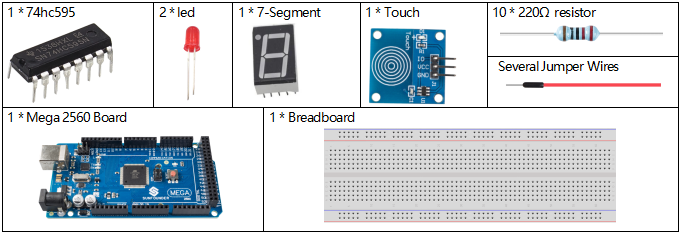
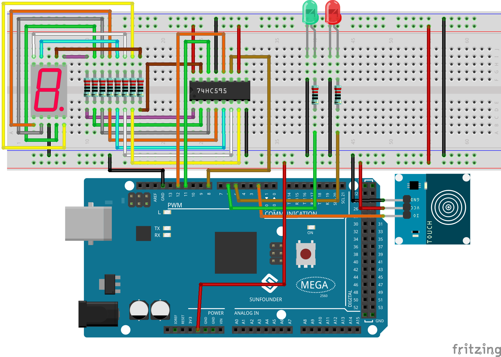
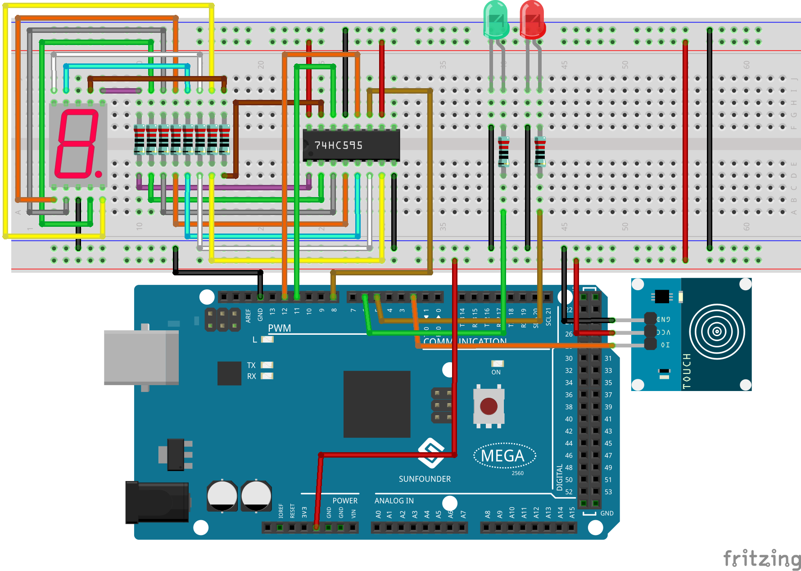

3.2 Pedestrian Crossing Button¶
Overview¶
When pedestrians cross the street, they just need to touch the button on the lamppost of the roadside signal lamp, and the green light above the traffic lane will turn into red then pedestrians can pass safely. Thus, the hard situation of citizens crossing the street is comprehensively resolved. At the same time, when there is no pedestrian to press, the light above the lane that is set for vehicles to pass will always be green, thus greatly improving the use efficiency of the road and traffic capacity.
Components Required¶
Fritzing Circuit¶
In this example, 74hc595, 7-Segment, LED, touch sensor are to be connected according to the chart.
 

Schematic Diagram¶

Example Explanation¶
The workflow of the project is as shown in the flow chart. The function of number display of 7-Segment is realized by writing 8 bit data into 74HC595. When there is a need of displaying「0」, the pins abcdef of the segment display will be connected to the high level. The pins, g and dp need to be connected to low level to write「0x3f」(B00111111) in the codes. The complete codes for number display of 7-Segment are as follows.

Numbers |
Common Cathode |
|
(DP)GFEDCBA |
Hex Code |
|
0 |
00111111 |
0x3f |
1 |
00000110 |
0x06 |
2 |
01011011 |
0x5b |
3 |
01001111 |
0x4f |
4 |
01100110 |
0x66 |
5 |
01101101 |
0x6d |
6 |
01111101 |
0x7d |
7 |
00000111 |
0x07 |
8 |
01111111 |
0x7f |
9 |
01101111 |
0x6f |
Phenomenon Picture¶